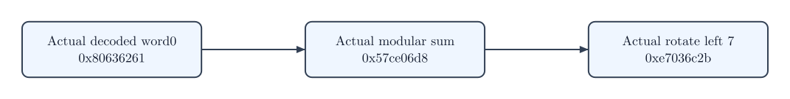
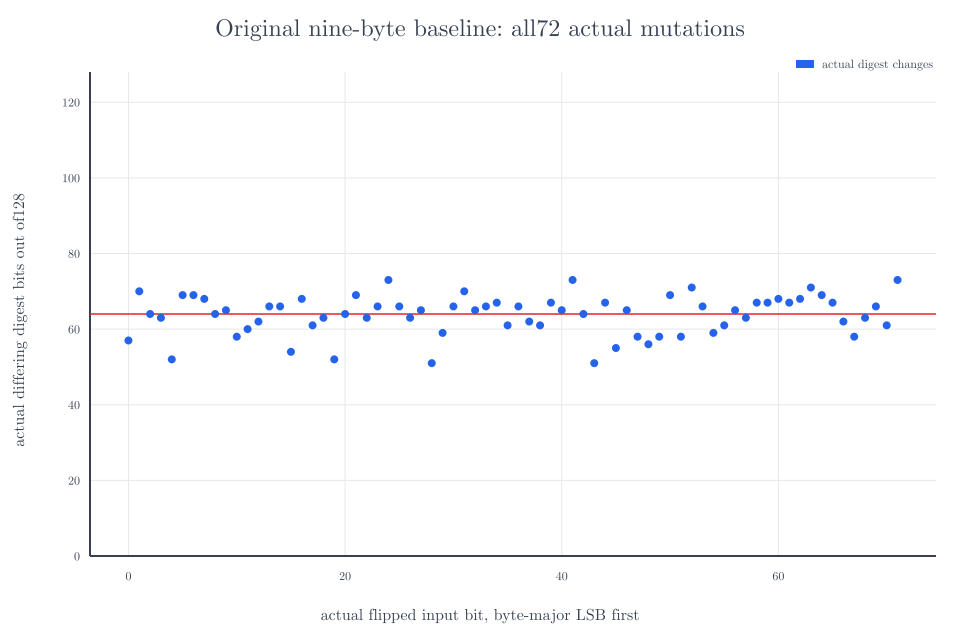
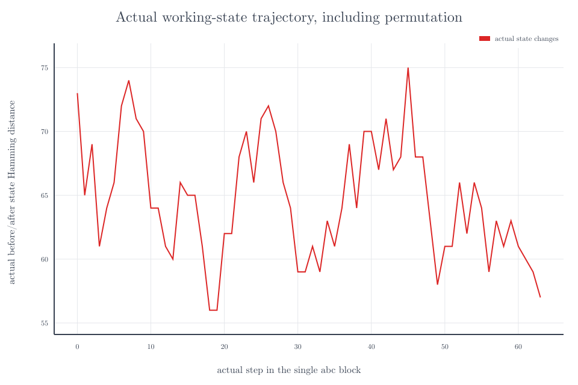
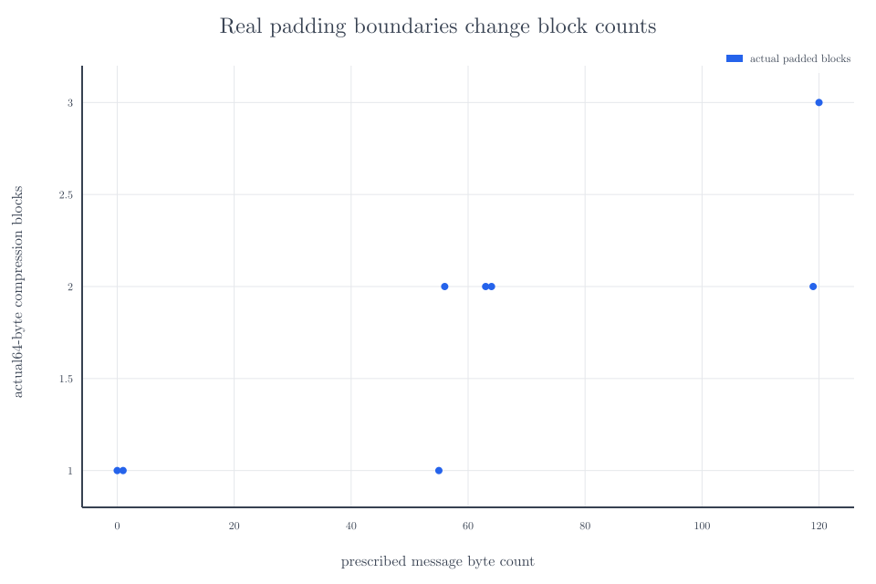

MD5 as a reproducible checksum study
Abstract
A byte-string checksum maps arbitrary input to a fixed-size digest. This study reproduces MD5’s published test vectors and exposes actual padding, decoded blocks, modular steps and feed-forward states from the canonical native producer. We retain the original nine-byte avalanche example and distinguish finite diffusion observations from collision resistance, which MD5 does not provide.
From bytes to modular steps
MD5 pads a message with a one bit, zeros and a64-bit little-endian original length modulo264, forming64-byte blocks. Decode each block into sixteen little-endian uint32 words. Four working words start from the incoming chaining state. Each of64 steps applies its prescribed Boolean function, adds a selected word and constant modulo232, rotates, adds the old b word, and permutes the working positions. Feed-forward adds the final working words into the incoming chain modulo2^32.
The canonical producer uses defined unsigned modular arithmetic. Its trace captures actual before/after words and actual decoded bytes, without implementing a second explanatory hash. The report is a checksum/mechanism study: diffusion on chosen inputs cannot establish collision resistance, and MD5’s known collision weakness excludes using it where that property is required.
A tiny actual first step
For the three bytes abc, the first actual decoded word is0x80636261: a,b,c followed by the padding byte0x80 in little-endian order. The diagram reads the real first step’s modular sum and rotated value. The printed digest is the actual canonical output.
#include <dm/dm.hpp>
int main() {
std::filesystem::create_directories("build");
auto t = dm::algorithms::md5_trace("abc");
auto &s = t.steps.front();
std::print("Actual canonical digest: `{}`.\n\n| actual step observation | hexadecimal value |\n| --- | " "--- |\n| selected decoded word | 0x{:08x} |\n| Boolean function | 0x{:08x} |\n| additive " "constant | 0x{:08x} |\n| modular sum | 0x{:08x} |\n| rotated word | 0x{:08x} |\n| new b | " "0x{:08x} |\n",
dm::algorithms::to_hex(t.analysis.digest), s.word, s.function,
s.constant, s.sum, s.rotated, s.after[1]);
dm::graphics::Diagram d;
d.node("word", {0, 0},
std::format("Actual decoded word{}\n0x{:08x}", s.word_index, s.word)).node("sum", {6, 0}, std::format("Actual modular sum\n0x{:08x}", s.sum)).node("rotate", {12, 0}, std::format("Actual rotate left {}\n0x{:08x}", s.shift, s.rotated)).edge("word", "sum").edge("sum", "rotate");
d.save_svg("build/md5_tiny.svg");
}Actual canonical digest: 900150983cd24fb0d6963f7d28e17f72.
| actual step observation | hexadecimal value |
|---|---|
| selected decoded word | 0x80636261 |
| Boolean function | 0x98badcfe |
| additive constant | 0xd76aa478 |
| modular sum | 0x57ce06d8 |
| rotated word | 0xe7036c2b |
| new b | 0xd6d117b4 |

Published vectors and the original avalanche experiment
The native reference-vector helper retains all seven fixed published expected digests. The program computes each actual digest before comparing it with the expected value. The original baseline word avalanche contains nine bytes, giving72 distinct single-input-bit mutations; the legacy prose called it eight bytes while its loop already performed72 flips.
The native study hashes the baseline and each real mutant, then counts actual output-bit differences. Display every mutation outcome directly, without clipping outlying counts into edge histogram bins. The horizontal64-bit reference is half of the128-bit digest width. A finite mean near that reference is descriptive; it neither proves independent output bits nor excludes chosen collisions.
#include <dm/dm.hpp>
int main() {
std::filesystem::create_directories("build");
std::print("| RFC vector | actual message bytes | actual digest | equals published expected |\n| ---: | " "---: | --- | --- |\n");
std::size_t index = 0;
for (auto & [message, expected] : dm::algorithms::md5_reference_vectors()) {
auto actual = dm::algorithms::md5_hex(message);
std::print("| {} | {} | {} | {} |\n", index++, message.size(), actual,
actual == expected);
}
auto a = dm::algorithms::md5_avalanche(dm::algorithms::md5_demo_message());
std::print("\nActual flips {}; measured mean {:.12f}; minimum {}; maximum {}.\n",
a.flips.size(), a.mean_changed, a.minimum_changed,
a.maximum_changed);
std::vector<double> x, y;
for (auto &f : a.flips) {
x.push_back(f.bit);
y.push_back(f.changed);
}
auto p = dm::graphics::RPlot::create();
p.points(x, y, "actual digest changes");
p.abline_h(64, {220, 38, 38}, 1.5).y_limits(0, 128).x_label(
"actual flipped input bit, byte-major LSB first").y_label(
"actual differing digest bits out of128").title("Original nine-byte baseline: all72 actual mutations").save_svg("build/md5_original.svg");
}| RFC vector | actual message bytes | actual digest | equals published expected |
|---|---|---|---|
| 0 | 0 | d41d8cd98f00b204e9800998ecf8427e | true |
| 1 | 1 | 0cc175b9c0f1b6a831c399e269772661 | true |
| 2 | 3 | 900150983cd24fb0d6963f7d28e17f72 | true |
| 3 | 14 | f96b697d7cb7938d525a2f31aaf161d0 | true |
| 4 | 26 | c3fcd3d76192e4007dfb496cca67e13b | true |
| 5 | 62 | d174ab98d277d9f5a5611c2c9f419d9f | true |
| 6 | 80 | 57edf4a22be3c955ac49da2e2107b67a | true |
Actual flips 72; measured mean 63.777777777778; minimum 51; maximum 73.

Inspect actual working-state changes
The next figure counts differing bits between each step’s actual before/after128-bit working state for abc. This includes the specified permutation of a,b,c,d as well as the new b value. It is a trajectory of one execution, not the output avalanche study and not an experiment about the digest of truncated rounds. Feed-forward is recorded separately at each block boundary.
#include <dm/dm.hpp>
int main() {
std::filesystem::create_directories("build");
auto t = dm::algorithms::md5_trace("abc");
std::vector<double> x, y;
std::print("| actual step | selected word index | actual state changed bits |\n| ---: | ---: | ---: " "|\n");
for (auto &s : t.steps) {
auto changed = dm::algorithms::md5_state_hamming(s.before, s.after);
x.push_back(s.index);
y.push_back(changed);
std::print("| {} | {} | {} |\n", s.index, s.word_index, changed);
}
auto p = dm::graphics::RPlot::create();
p.line(x, y, "actual state changes");
p.x_label("actual step in the single abc block").y_label(
"actual before/after state Hamming distance").title(
"Actual working-state trajectory, including permutation").save_svg(
"build/md5_steps.svg");
}| actual step | selected word index | actual state changed bits |
|---|---|---|
| 0 | 0 | 73 |
| 1 | 1 | 65 |
| 2 | 2 | 69 |
| 3 | 3 | 61 |
| 4 | 4 | 64 |
| 5 | 5 | 66 |
| 6 | 6 | 72 |
| 7 | 7 | 74 |
| 8 | 8 | 71 |
| 9 | 9 | 70 |
| 10 | 10 | 64 |
| 11 | 11 | 64 |
| 12 | 12 | 61 |
| 13 | 13 | 60 |
| 14 | 14 | 66 |
| 15 | 15 | 65 |
| 16 | 1 | 65 |
| 17 | 6 | 61 |
| 18 | 11 | 56 |
| 19 | 0 | 56 |
| 20 | 5 | 62 |
| 21 | 10 | 62 |
| 22 | 15 | 68 |
| 23 | 4 | 70 |
| 24 | 9 | 66 |
| 25 | 14 | 71 |
| 26 | 3 | 72 |
| 27 | 8 | 70 |
| 28 | 13 | 66 |
| 29 | 2 | 64 |
| 30 | 7 | 59 |
| 31 | 12 | 59 |
| 32 | 5 | 61 |
| 33 | 8 | 59 |
| 34 | 11 | 63 |
| 35 | 14 | 61 |
| 36 | 1 | 64 |
| 37 | 4 | 69 |
| 38 | 7 | 64 |
| 39 | 10 | 70 |
| 40 | 13 | 70 |
| 41 | 0 | 67 |
| 42 | 3 | 71 |
| 43 | 6 | 67 |
| 44 | 9 | 68 |
| 45 | 12 | 75 |
| 46 | 15 | 68 |
| 47 | 2 | 68 |
| 48 | 0 | 63 |
| 49 | 7 | 58 |
| 50 | 14 | 61 |
| 51 | 5 | 61 |
| 52 | 12 | 66 |
| 53 | 3 | 62 |
| 54 | 10 | 66 |
| 55 | 1 | 64 |
| 56 | 8 | 59 |
| 57 | 15 | 63 |
| 58 | 6 | 61 |
| 59 | 13 | 63 |
| 60 | 4 | 61 |
| 61 | 11 | 60 |
| 62 | 2 | 59 |
| 63 | 9 | 57 |

Padding boundaries, work and capture
The empty message still requires a padding block. Length55 fits its suffix in one block; length56 needs two. Complete padded-size geometry is checked before copying or appending. The input length encoding deliberately retains RFC modulo2^64 bit semantics; container geometry is checked separately rather than confused with that modular field.
For N input bytes and B padded blocks, canonical hashing performs64B steps and uses O(N) padded workspace. It is not a streaming API. The avalanche study hashes8N mutants after copying their N-byte messages, giving O(N^2) work plus O(N) outcome records. Its optional complete mutation-count cap defaults to one million, with zero disabling it. Empty studies retain the actual empty-message digest and no outcomes; mean/min/max zero values are explicitly placeholders.
Complete trace admission counts N original bytes, P padded bytes,65 records per block and16 final digest bytes. Default limit is one million logical entries; zero disables that optional cap. Record fields, capacities, runtime copies and payload bytes within record fields are excluded from that logical count. Captured storage has a larger constant than the count suggests. Complete geometry/admission checks precede copying/padding, and a failure never returns a partial history.
#include <dm/dm.hpp>
int main() {
std::filesystem::create_directories("build");
std::vector<double> x, y;
std::print("| prescribed input bytes | actual padded bytes | actual blocks | actual steps | complete " "capture entries |\n| ---: | ---: | ---: | ---: | ---: |\n");
for (std::size_t n : {0, 1, 55, 56, 63, 64, 119, 120}) {
auto t = dm::algorithms::md5_trace(std::string(n, 'a'));
x.push_back(n);
y.push_back(t.analysis.blocks);
std::print("| {} | {} | {} | {} | {} |\n", n, t.analysis.padded_bytes,
t.analysis.blocks, t.analysis.steps, t.captured_entries);
}
auto p = dm::graphics::RPlot::create();
p.points(x, y, "actual padded blocks");
p.x_label("prescribed message byte count").y_label("actual64-byte compression blocks").title("Real padding boundaries change block counts").save_svg("build/md5_padding.svg");
}| prescribed input bytes | actual padded bytes | actual blocks | actual steps | complete capture entries |
|---|---|---|---|---|
| 0 | 64 | 1 | 64 | 145 |
| 1 | 64 | 1 | 64 | 146 |
| 55 | 64 | 1 | 64 | 200 |
| 56 | 128 | 2 | 128 | 330 |
| 63 | 128 | 2 | 128 | 337 |
| 64 | 128 | 2 | 128 | 338 |
| 119 | 128 | 2 | 128 | 393 |
| 120 | 192 | 3 | 192 | 523 |

Verification and references
Native tests retain all seven RFC expected digests and inspect actual padding,
decoded words, every Boolean function/word selection/modular sum/rotation/state
update and each feed-forward for every byte length0..256 with arbitrary bytes.
Test constants are independently evaluated from the published sine formula.
Every original mutation is rehashed and bit-counted independently, with exact
means/min/max, empty behavior, binary NUL/high bytes, ownership and quota
boundaries. The shared ten-report batch passes 71 CTest cases, 29 directly
instrumented ASan/UBSan cases, 130 compiled and executed public examples,
598/598 scoped documentation definitions and ten representative hovers.
Independent Python arbitrary-precision, hashlib, sorted-window, RNG, polynomial,
graph and full-assignment references verify 224,229 actual records. Frozen
comparisons preserve ordinary legacy outputs, including selected clique
identities, original density graphs and memetic partitions. Twelve checkout
headers and twelve identically installed headers compile independently; an
installed-header native consumer links and runs. All four complete programs and
all four native figures pass execution and visual review, and HTML/Markdown
exports preserve computed results and identical image bytes. Receipts:
build/mepml-conversion/batch-224-233/.
RFC1321 specifies the algorithm and reference vectors. RFC6151 updates its security considerations and explains the collision-resistance limitation. No diffusion plot in this report overrides that limitation.